GPU industry research
Market research on GPU compute, model economics, and ICN positioning
A browser-first research workspace combining presentation decks, interactive strategy dashboards, and learning explainers. Built for walkthroughs with the ICN team and external partners.
3
Decks
4
Strategy dashboards
3
Learning explainers
2
Companion tools
Presentation decks
Slide decks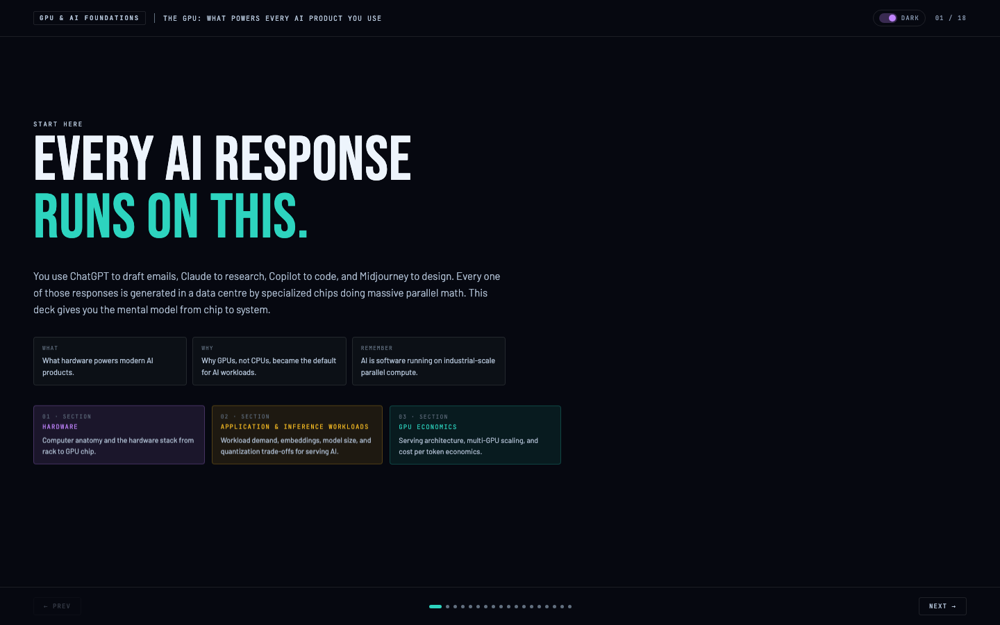
18 slidesDeck 1 · Foundations
GPUs and AI: from silicon to intelligence
- Computer anatomy from rack to GPU chip
- Why GPUs replaced CPUs for AI workloads
- Inference mechanics: embeddings, attention, quantization
- Cost-per-token economics and multi-GPU scaling
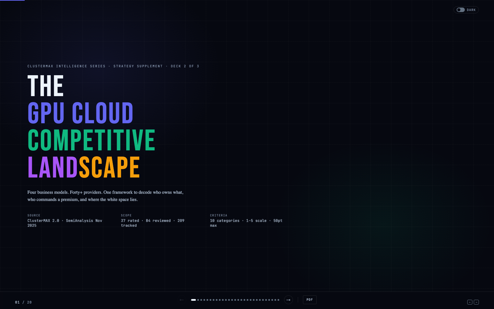
Slide deckDeck 2 · Competition
The GPU cloud competitive landscape
- 15+ provider comparison with ClusterMAX scoring
- Business model archetypes: hyperscaler, neocloud, aggregator
- Stack coverage and market segmentation breakdown
- Head-to-head differentiators and positioning maps
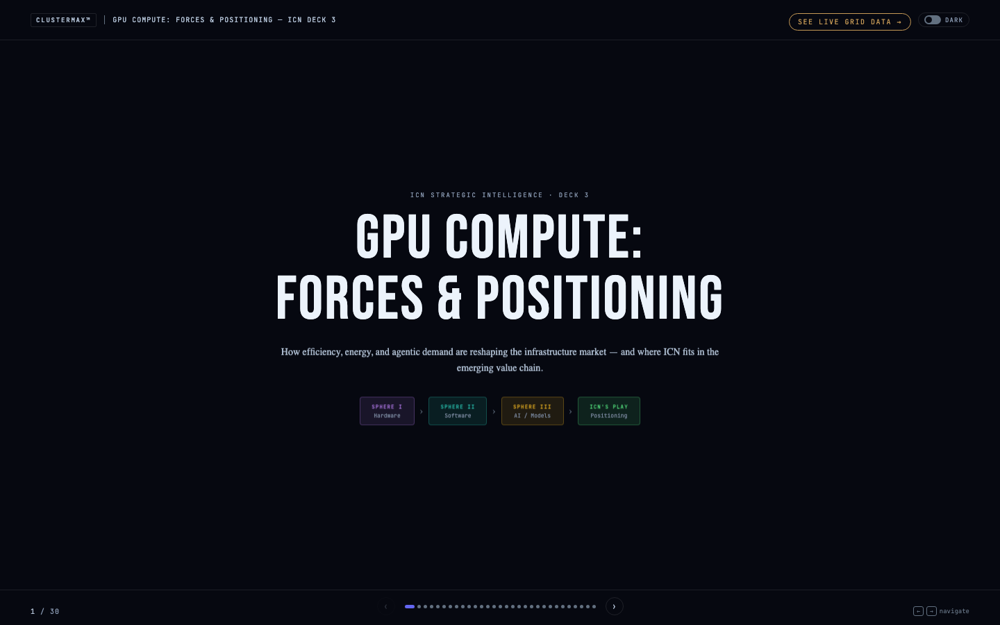
Slide deckDeck 3 · Positioning
GPU compute: forces and positioning
- Demand growth drivers: agentic AI, inference volume, model scaling
- Supply dynamics: NVIDIA roadmap, capacity constraints, pricing
- ICN positioning thesis within the compute stack
- Market force scenarios and economic inflection points
Strategy dashboards
Interactive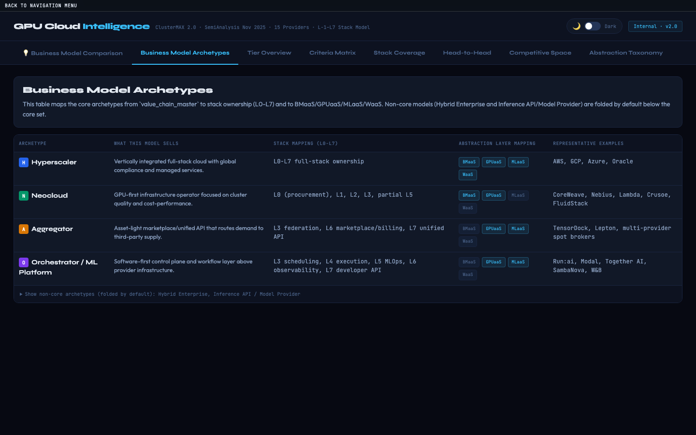
DashboardClusterMAX 2.0
GPU cloud competitor intelligence
- Multi-tab dashboard: archetypes, tier overview, criteria matrix
- Head-to-head provider comparisons with scoring breakdowns
- Stack coverage visualization across L0-L7 layers
- Competitive space mapping with Plotly charts
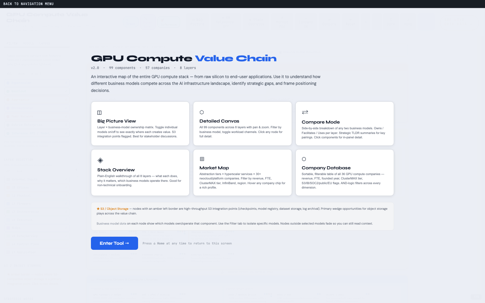
Dashboard8-layer stack model
GPU compute value chain
- Full L0-L7 stack map from silicon to end-user
- Business model archetype mapping per layer
- Margin structure and ownership visualization
- How providers fit into the compute value chain
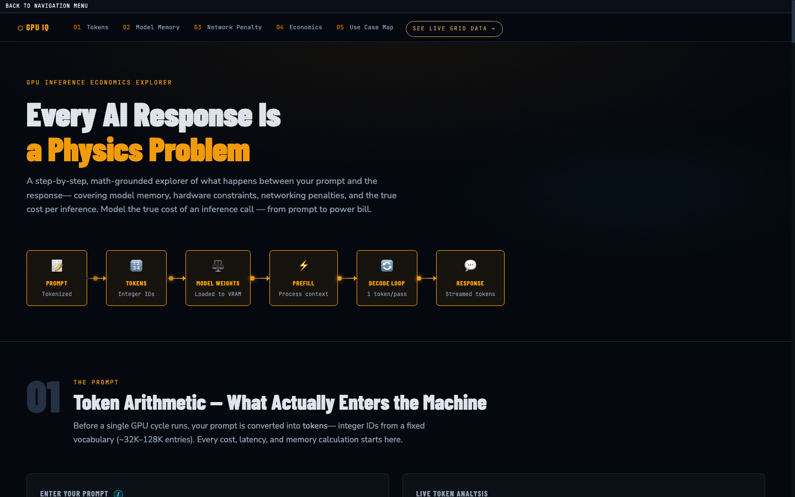
DashboardCost modeling
Inference economics explorer
- GPU-level cost and throughput calculators
- Token economics: $/Mtok across GPU tiers
- Utilization sensitivity and margin analysis
- Compares on-demand, reserved, and spot pricing
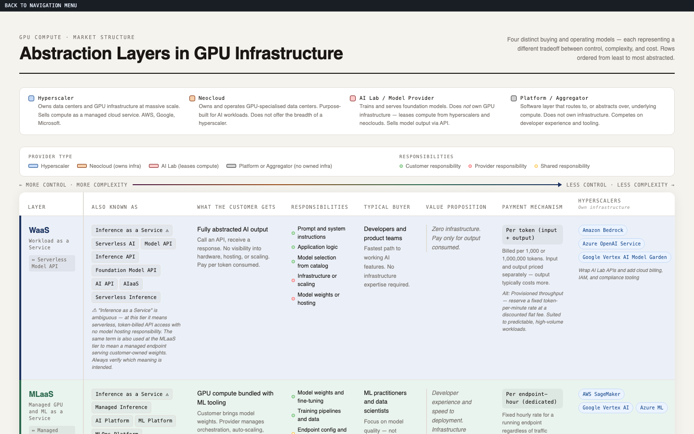
DashboardMarket map
Abstraction layer market map
- BMaaS / GPUaaS / MLaaS / WaaS taxonomy
- Where each provider sits in the abstraction stack
- Service model comparison across market segments
- Maps business models to value chain layers
Learning explainers
Deep dives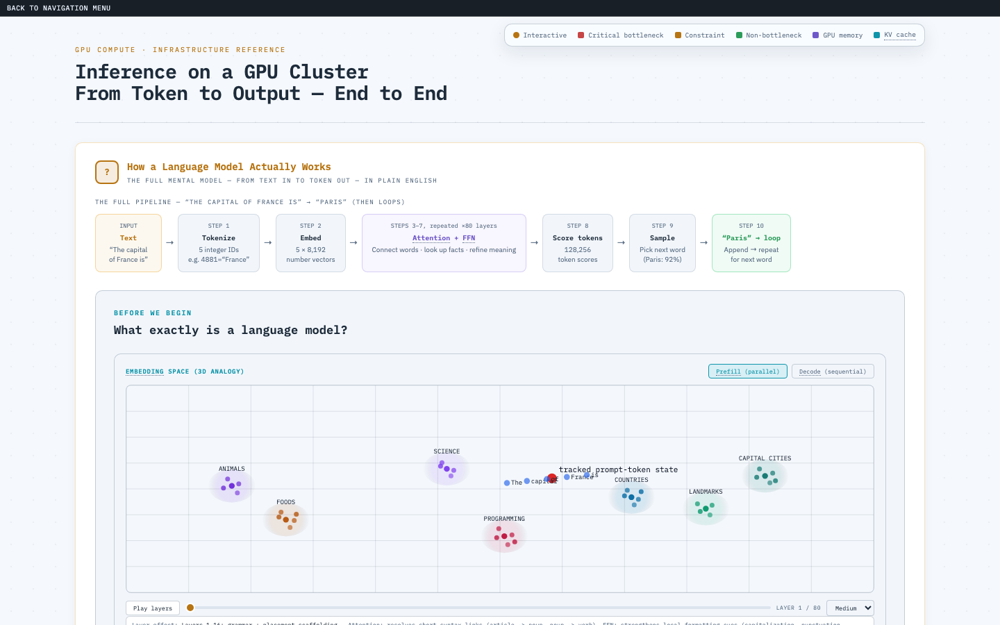
ReferenceVisual explainer
Inference compute master
- Token flow from input to output, step by step
- Memory math: KV cache, batch sizing, MFU
- Interactive pipeline with animated data flow
- The single best page for understanding GPU inference
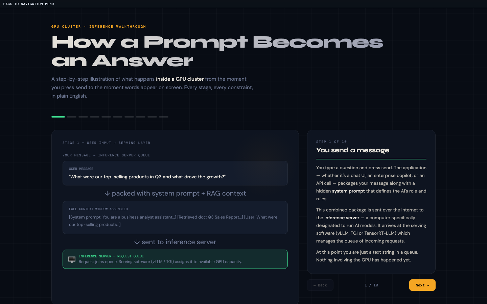
ReferenceEnd-to-end walkthrough
How inference works on a GPU cluster
- Traces a prompt from API call to token response
- Cluster-level view: load balancing, scheduling, routing
- GPU-level view: prefill vs. decode phases
- Explains latency, throughput, and the memory wall
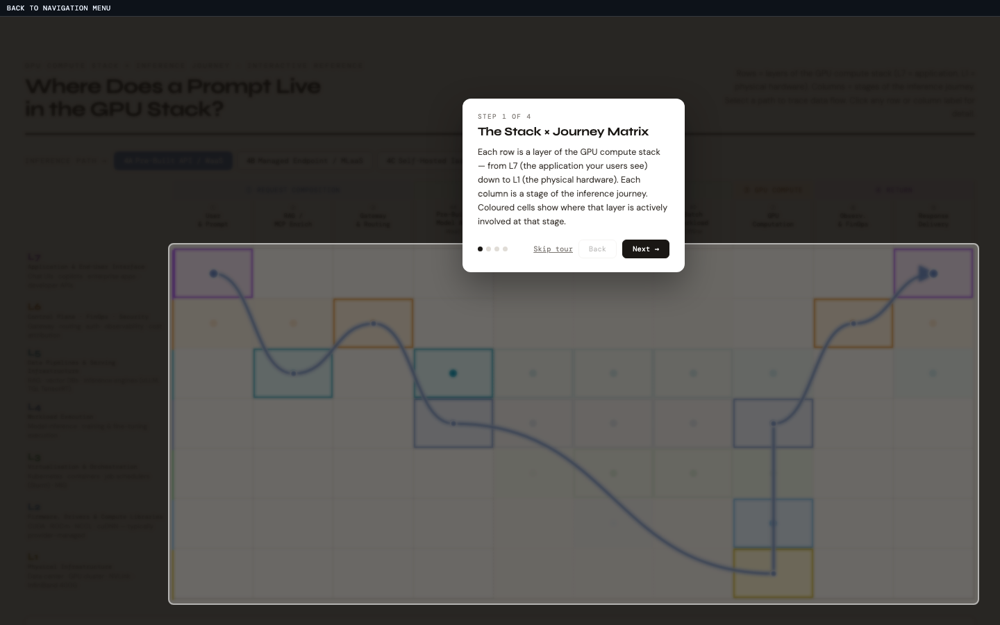
ReferenceInteractive matrix
GPU stack x inference journey
- Cross-references stack layers with inference stages
- Shows which hardware and software matters at each step
- Interactive cells with detailed technical annotations
- Connects the learning material to the strategy dashboards
Companion tools
Utilities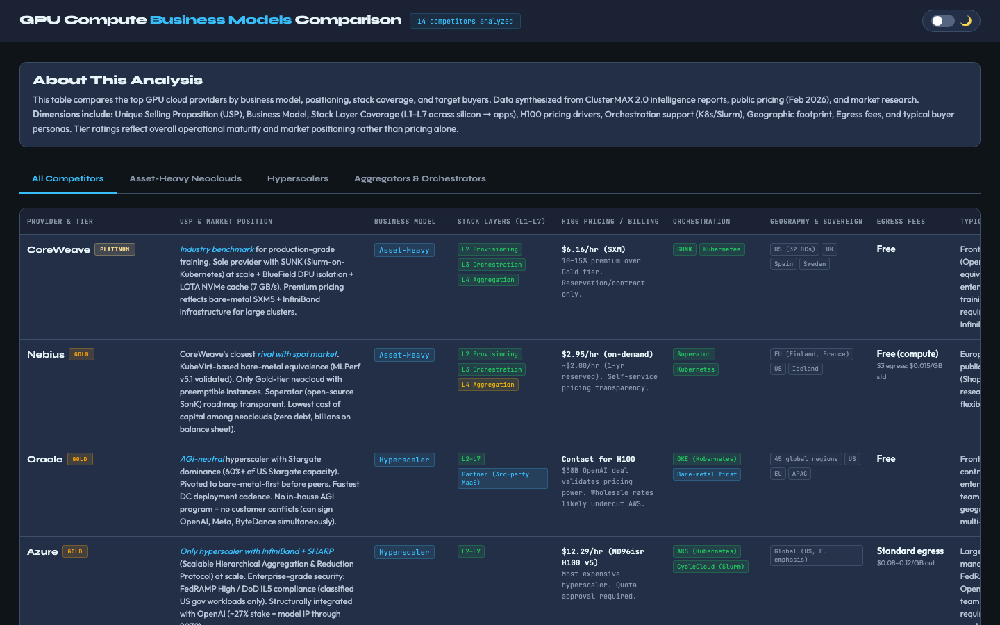
ComparisonProvider analysis
Business model and stack comparison
- Side-by-side business model breakdowns per provider
- Revenue model, customer segment, and go-to-market comparison
- Stack ownership depth vs. breadth visualization
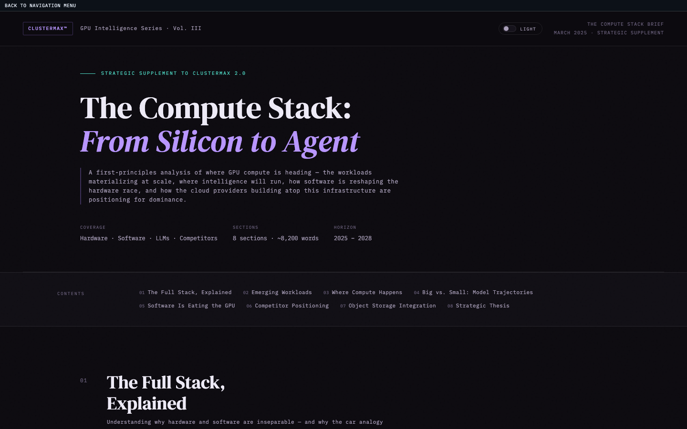
BriefExecutive summary
Compute stack intelligence brief
- Condensed overview of the full research workspace
- Key findings and strategic takeaways in one page
- Entry point for readers who want the thesis without the detail
Supporting materials
Research inputs
Source material
- Academic papers, analyst reports, podcast transcripts
- LinkedIn posts, X threads, interview notes
- Organized in
sources/by type
Structured data
JSON data files
- GPU economics spec, workload forecasts, market positioning
- Provider differentiators and deck-specific data bindings
- Machine-readable inputs that power the interactive charts
Notes and research
Manual notes and Gemini outputs
- NVIDIA GTC 2026 notes, trend synthesis, interview notes
- Gemini competitor analysis and business model research
- Scenario planning and positioning one-pagers